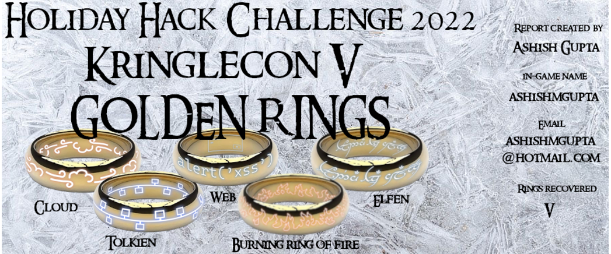
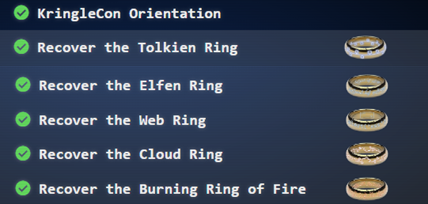

Overview
Hi and welcome to my 2022 SANS Holiday Hack Challenge write-up.
SANS Holiday Hack Challenge is a holiday themed and gamified cybersecurity competition.
The hands-on challenges encompass a number of cyber security areas namely network security, application security, cloud Security to name a few.
Its my privilege to attend the Kringlecon for the third time.
Since 2020, every year I look forward to December and make every attempt to complete it.
This year the challenge is based on "Lord of the Rings" series. You are tasks to to recover 5 golden rings with each ring requiring you to solve a number of challenges.
Fortunately I was able to complete all of challenges and recover all the rings.
|
Objectives completed |
The Story |
|
 |
Five Rings for the Christmas king immersed in cold Each Ring now missing from its zone The first with bread kindly given, not sold Another to find 'ere pipelines get owned One beneath a fountain where water flowed Into clouds Grinchum had the fourth thrown The fifth on blockchains where shadows be bold One hunt to seek them all, five quests to find them One player to bring them all, and Santa Claus to bind them |
Answer to objectives and High-level approach
|
Objectives |
Answer |
High level approach to solve the objective |
|
1. Kringlecon Orientation |
answer |
Write "answer" in the top pane of the terminal presented by the elf Jingle Ringford. |
|
2. Wireshark Practice |
Q1: What type of objects can be exported from the
PCAP? |
Open the pcap file using Wireshark.
|
|
Q2: What is the file name of the largest file we can export? Answer: app.php |
||
|
Q3: What packet number starts that app.php file? |
||
|
Q4: What is the IP of the Apache server? Answer: 192.185.57.242 |
||
|
Q5: Attackers used bad TLS certificates in this traffic. Which countries were they registered to? Submit the names of the countries in alphabetical order separated by comma (ex, Norway, South Korea) Answer: Ireland, Israel, South Sudan, United States |
||
|
Q6: Is the host infected? Answer: Yes |
||
|
3. Windows Events Logs |
Q1: What month/day/year did the attack take place? For example, 09/05/2021 Answer: 12/24/2022 |
Convert the .evtx file to csv and then use PowerShell on CSV to answer questions. |
|
Q2: An attacker got a secret from a file. What was the original file's name? Answer: recipe |
||
|
Q3: The contents of the previous file were retrieved,
changed, and stored to a variable by the attacker. This was done multiple
times. Submit the last full PowerShell line that performed only these
actions. |
||
|
Q4: After storing the altered file contents into the
variable, the attacker used the variable to run a separate command that wrote
the modified data to a file. This was done multiple times. Submit the last full
PowerShell line that performed only this action. |
||
|
Q5: The attacker ran the previous command against one
file multiple times. What is the name of this file? |
||
|
Q6: Were any files deleted? (Yes/No) |
||
|
Q7: Was the original file (from question 2) deleted?
(Yes/No) |
||
|
Q8: What is the Event ID of the logs that show the
actual command lines the attacker typed and ran? |
||
|
Q9: Is the secret ingredient compromised (Yes/No)? |
||
|
Q10: What is the secret ingredient? |
||
|
4. Suricata regatta |
Q1: Create a Suricata rule to catch DNS lookups for adv.epostoday.uk. Whenever there's a match, the alert message (msg) should read Known bad DNS lookup, possible Dridex infection Answer: alert dns any any -> any any (msg:"Known bad DNS lookup, possible Dridex infection"; dns_query; content:"adv.epostoday.uk"; depth:20; fast_pattern; endswith; nocase; classtype:pup-activity; sid:200; rev:2;) |
Follow the syntax noted in the hint link to create our own rules needed for the challenge. |
|
Q2: Develop a Suricata rule that alerts whenever the infected IP address 192.185.57.242 communicates with internal systems over HTTP. When there's a match, the message (msg) should read Investigate suspicious connections, possible Dridex infection Answer: alert http any any -> any any (msg:"Investigate suspicious connections, possible Dridex infect"; sid:300; rev:2;) |
||
|
Q3: We heard that some naughty actors are using TLS certificates with a specific CN. Develop a Suricata rule to match and alert on an SSL certificate for heardbellith.Icanwepeh.nagoya. When your rule matches, the message (msg) should read Investigate bad certificates, possible Dridex infection Answer: alert tls any any -> any any (msg:"Investigate bad certificates, possible Dridex infection"; tls.subject:"CN=heardbellith.Icanwepeh.nagoya"; sid:400; rev:2;) |
||
|
Q4: Watch for one line from the Javascript: Let byteCharacters = atob Oh, and that string might be Gzip compressed - I hope that"s OK! Just in case they try this again, please alert on that HTTP data with message Suspicious Javascript function, possible Dridex infection Answer: alert http any any -> any any (msg:"Suspicious JavaScript function, possible Dridex infection"; file_data; content:"let byteCharacters = atob"; sid:500; rev:2;) |
||
|
5. Clone with a difference |
maintainers |
Create an empty git repo, add the remote repo to it, then fetch and checkout the master branch. |
|
6. Prison Escape |
082bb339ec19de4935867 |
User is privileged in docker. Mount the host drive and access the file in the host /home folder. |
|
7. Jolly CI/CD |
oI40zIuCcN8c3MhKgQjOMN8lfYtVqcKT |
Get the private key from user"s previous commit, clone with SSH key, commit a webshell and use the webshell to get the flag. |
|
8. Naughty IP |
18.222.86.32 |
Wireshark |
|
9. Credential mining |
alice |
Use Wireshark filters |
|
10. 404 FTW |
/proc |
Use Wireshark filters and display filters. |
|
11.IMDS, XXE, and Other Abbreviations |
http://169.254.169.254/latest/meta-data/identity-credentials/ec2/security-credentials/ec2-instance |
Look for 169.254.169.254 as dest ip in Wireshark. |
|
12. Open boria mine door |
Solved in the game |
Used SVG in HTML and JS. |
|
13. Glamtariels Fountain |
goldring-morethansupertopsecret76394734.png |
Used XXE injection. |
|
14. AWS CLI Intro |
Solved in the console |
Follow the instructions |
|
15. Trufflehog Search |
put_policy.py |
Install Trufflehog on local machine and used on given repo. |
|
16. Exploitation via AWS CLI |
Solved in the game |
Configure the creds found via Trufflehog and then use AWS CLI on it to get lambda URLs. |
|
17. Buy A Hat |
Solved in the game |
Followed the instructions. |
|
18. Blockchain Divination |
0xc27A2D3DE339Ce353c0eFBa32e948a88F1C86554 |
The "To address" in the transaction has the answer. |
|
19. Exploit a smart contract |
Solved in the game |
Build our own Merkle tree with our wallet address and pass it on the website replacing the hardcoded "root" value with the root value of our own Merkle tree with our wallet/proof. |